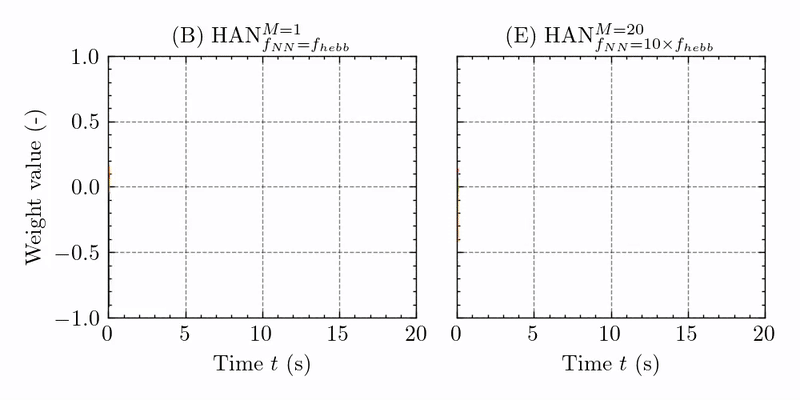
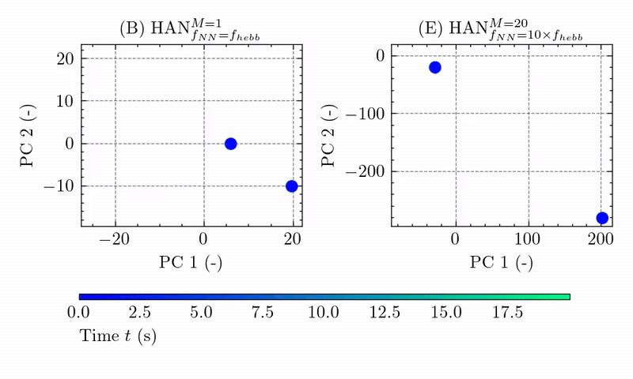
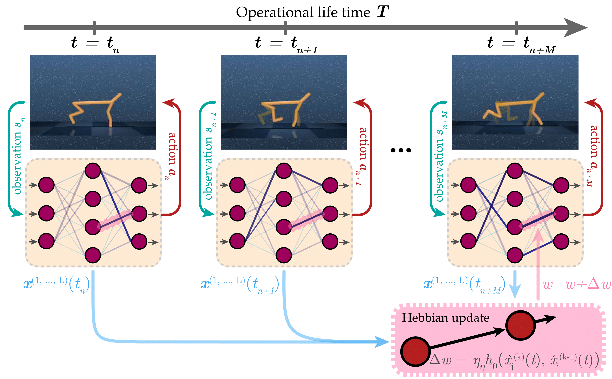
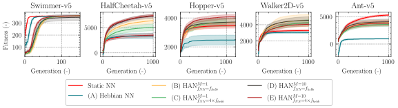
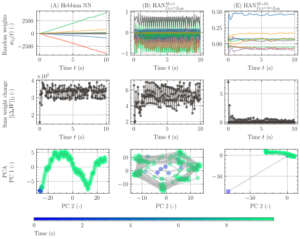

Simulated Unitree Go1
We transfer our results to a simulated Unitree Go1.




Biological neural networks continuously adapt and modify themselves in response to changes throughout their operational lifetime—a capability largely absent in artificial neural networks. Integrating local Hebbian plasticity offers a promising path toward rapid adaptation in changing environments. Here, we introduce Hebbian Attractor Networks (HAN), a class of plastic neural networks in which weight normalization induces emergent attractor dynamics. Unlike prior approaches, HANs employ dual-timescale plasticity and temporal averaging of pre- and postsynaptic activations to induce either co-dynamic limit cycles or fixed-point weight attractors. Using simulated locomotion benchmarks, we analyze how Hebbian update frequency and activation averaging influence weight dynamics and control performance. Our results show that slower updates, combined with averaged pre- and postsynaptic activations, promote convergence to stable weight configurations, while faster updates yield co-dynamic oscillatory systems. We further demonstrate that these findings generalize to high-dimensional quadrupedal locomotion with a simulated Unitree Go1 robot. These results highlight how the timing of plasticity shapes neural dynamics in embodied systems and offer insights into the design of more adaptive, self-modifying controllers.

Biological neural networks continuously adapt and modify themselves in response to changes throughout their operational lifetime—a capability largely absent in artificial neural networks. Integrating local Hebbian plasticity offers a promising path toward rapid adaptation in changing environments. Here, we introduce Hebbian Attractor Networks (HAN), a class of plastic neural networks in which weight normalization induces emergent attractor dynamics. Unlike prior approaches, HANs employ dual-timescale plasticity and temporal averaging of pre- and postsynaptic activations to induce either co-dynamic limit cycles or fixed-point weight attractors. Using simulated locomotion benchmarks, we analyze how Hebbian update frequency and activation averaging influence weight dynamics and control performance. Our results show that slower updates, combined with averaged pre- and postsynaptic activations, promote convergence to stable weight configurations, while faster updates yield co-dynamic oscillatory systems. We further demonstrate that these findings generalize to high-dimensional quadrupedal locomotion with a simulated Unitree Go1 robot. These results highlight how the timing of plasticity shapes neural dynamics in embodied systems and offer insights into the design of more adaptive, self-modifying controllers.

Biological neural networks continuously adapt and modify themselves in response to changes throughout their operational lifetime—a capability largely absent in artificial neural networks. Integrating local Hebbian plasticity offers a promising path toward rapid adaptation in changing environments. Here, we introduce Hebbian Attractor Networks (HAN), a class of plastic neural networks in which weight normalization induces emergent attractor dynamics. Unlike prior approaches, HANs employ dual-timescale plasticity and temporal averaging of pre- and postsynaptic activations to induce either co-dynamic limit cycles or fixed-point weight attractors. Using simulated locomotion benchmarks, we analyze how Hebbian update frequency and activation averaging influence weight dynamics and control performance. Our results show that slower updates, combined with averaged pre- and postsynaptic activations, promote convergence to stable weight configurations, while faster updates yield co-dynamic oscillatory systems. We further demonstrate that these findings generalize to high-dimensional quadrupedal locomotion with a simulated Unitree Go1 robot. These results highlight how the timing of plasticity shapes neural dynamics in embodied systems and offer insights into the design of more adaptive, self-modifying controllers.

We transfer our results to a simulated Unitree Go1.


@article{dittrich2024,
author = {Alexander Dittrich},
title = {Weight Dynamics of Neural Networks with Evolved Hebbian Learning Rules for Robot Locomotion},
year = {2024},
publisher = {GitHub},
journal = {GitHub repository},
}